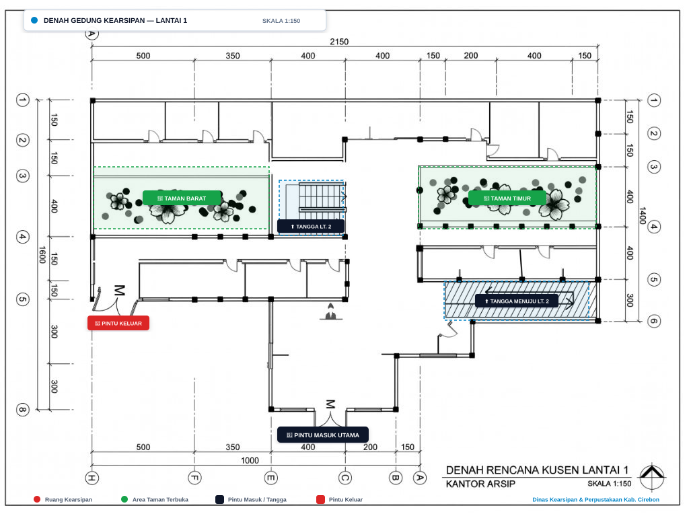

GEDUNG KEARSIPAN — LANTAI 1
Memuat zonasi denah aktif...

Sistem Informasi Denah Interaktif, Tur Panorama & Pencarian Lokasi Boks Arsip - Gedung Kearsipan
Memuat zonasi denah aktif...

Sistem Informasi Denah Interaktif, Tur Panorama 360° & Pencarian Lokasi Boks Arsip